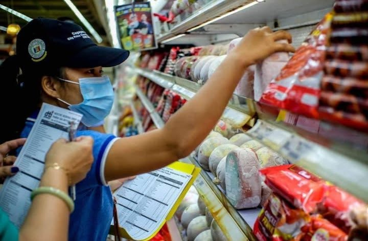

PAMBANSANG BALITA
BALDE, SOLUSYON SA MATINDING EL NIÑO?
Oktubre 11, 2026

Patuloy na nagiging hamon ang epekto ng El Niño sa iba't
ibang lugar. Dahil sa matinding init at kakulangan ng tubig,
mahalagang magkaroon ng mga paraan upang makatipid at
makapag-imbak ng sapat na suplay ng tubig.
Isa sa mga mungkahing paraan ang paggamit ng balde bilang
pansamantalang lalagyan ng tubig. Sa pamamagitan nito,
maaaring magkaroon ng nakaimbak na tubig para sa mga
pangunahing pangangailangan sa bahay.
Gayunpaman, mahalagang isaalang-alang ang wastong paggamit
at pagtitipid ng tubig upang makatulong sa pagharap sa
epekto ng El Niño.
EKONOMIYA
PAGBABAGO NG HALAGA NG PISO KONTRA SA USD
Oktubre 27, 2026

Patuloy na sinusubaybayan ang pagbabago ng halaga ng piso
kumpara sa United States Dollar (USD). Ang palitan ng
dalawang salapi ay mahalaga dahil maaari itong makaapekto
sa presyo ng mga inaangkat na produkto at iba pang
gastusin sa bansa.
Sa impormasyong ibinigay para sa ulat na ito, naitala ang
palitan sa halagang ₱64.17 kada isang US dollar noong
Oktubre 27, 2026.
Mahalaga ang pagsubaybay sa halaga ng piso dahil may
epekto ang pagbabago ng palitan sa ekonomiya at sa
pang-araw-araw na gastusin ng mga mamamayan.
PRESYO AT EKONOMIYA
PATULOY NA PAGTAAS NG PRESYO NG MGA BILIHIN, PABIGAT SA MGA PAMILYANG PILIPINO
Nobyembre 4, 2026

MANILA, Philippines – Patuloy na nararamdaman ng maraming
pamilyang Pilipino ang pagtaas ng presyo ng mga pangunahing
bilihin at iba pang pang-araw-araw na pangangailangan.
Dahil dito, mas nagiging mahirap para sa ilang mamimili
na pagkasyahin ang kanilang badyet sa pagkain at iba
pang gastusin.
s
Batay sa inilabas na ulat ng Philippine Statistics
Authority (PSA), umabot sa 7.2 porsiyento ang inflation
rate sa bansa noong Setyembre 2026, mas mataas kumpara
sa 6.1 porsiyento noong Agosto ng parehong taon.
Kabilang sa mga nakaaapekto sa pagtaas ng presyo ang
pagkain, kuryente, at pamasahe. Ayon din sa Bangko
Sentral ng Pilipinas (BSP), maaaring umabot sa 7.1
hanggang 8.1 porsiyento ang inflation rate noong
Oktubre dahil sa pagtaas ng presyo ng langis,
kuryente, at transportasyon.
Dahil sa sitwasyong ito, kailangang mas pag-isipan
ng mga mamimili ang kanilang paggastos. May mga
pamilyang napipilitang magbawas ng ilang binibili
upang mas mapagkasya ang kanilang pera sa mga
pangunahing pangangailangan.
Samantala, nagsasagawa rin ng mga hakbang ang
pamahalaan upang mapanatiling sapat ang suplay
ng mga pangunahing produkto at mabawasan ang
epekto ng pagtaas ng presyo sa mga mamamayan.
Patuloy na nagiging hamon ang pagtaas ng presyo
ng mga bilihin sa bansa, lalo na para sa mga
pamilyang may limitadong kita. Kaya mahalagang
bantayan ang presyo sa merkado at magkaroon
ng wastong pagpaplano sa badyet upang matugunan
ang pang-araw-araw na pangangailangan.